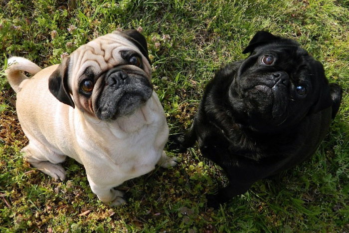

Застосовується до тегів p, вкладених у div, на першому рівні, вага 0-1-0 (1 клас)
Селектор класу, вага 0-1-0
Селектор id, вага 1-0-0
Тег p з класом, вага 0-1-0
Атрибут data-info, вага 0-1-1
Вкладений селектор: div.wrapper p, вага 0-1-1
Дочірній селектор: div.parent > p, вага 0-1-1
Послідовність селекторів: div.container p.text, вага 0-2-1
Мопс (нидерл. mops) — порода декоративных собак. Мопсы были привезены из Китая в Европу в XVI веке и были популярны в Западной Европе, попав туда через Нидерланды. В Соединённом Королевстве в XIX веке королева Виктория развила страсть к мопсам, которую она передала другим членам королевской семьи. Мопсы известны тем, что являются общительными и нежными собаками-компаньонами. Американский клуб собаководства описывает личность породы как «уравновешенный и обаятельный». Собака этой породы была признана лучшей на «Всемирной выставке собак» 2004 года.
Мопс — древняя китайская порода. В ранних китайских рукописях упоминаются «квадратные, низкие собаки с короткой мордой». В Китае существовали собаки «Ха Па» и «Ло Цзе». Две эти разновидности были очень схожи и различались только длиной шерсти. «Ха Па» были длинношёрстными. Вероятно, предками мопсов были «Ло Цзе», они походили на пекинесов, но обладали короткой шерстью. Мопсы были собаками знати и проживали в богатых домах. В те времена у мопсов ещё не было столь глубоких морщин, но чёткий рисунок складок на лбу проявлялся и был схож с иероглифами. Именно поэтому морщины на лбу мопса называли императорским знаком. Мопс попал во Францию с турецким флотом в 1553 году. Позже эта порода стала любима и в Нидерландах, где её окрас уподоблял цветам правящего дома Оранских. Когда Вильгельм III Оранский стал английским королём, он и его жена Мария II привезли в 1689 году мопсов из Нидерландов.